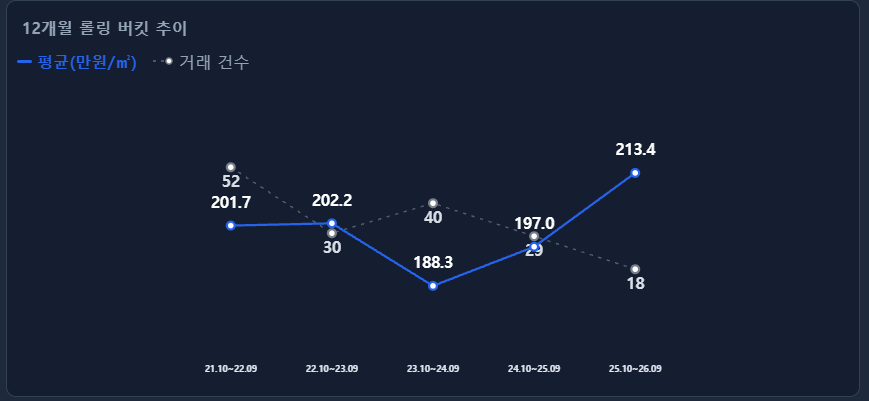
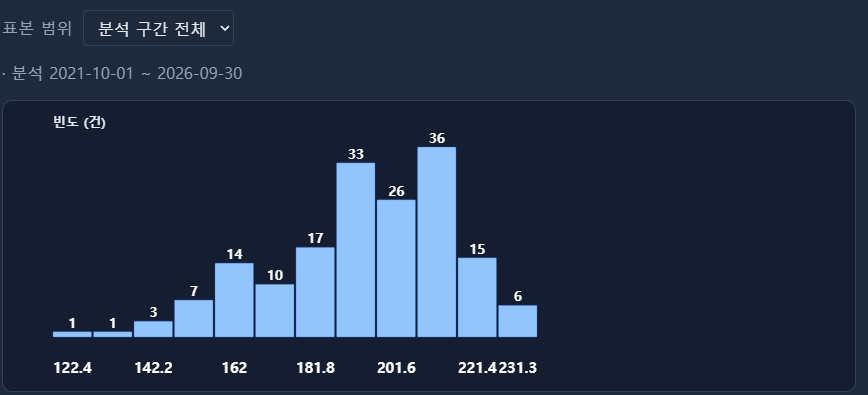

서두 · 학습목표
같은 자료도 그림에 따라 다르게 보입니다
한 반 학생들의 통학 시간을 표로 적으면 개별 학생의 기록을 찾기 쉽습니다. 하지만 시간이 어느 구간에 많이 모여 있는지, 유난히 오래 걸리는 학생이 있는지는 그림으로 볼 때 더 잘 드러납니다. 그래프는 많은 값을 한눈에 살펴보는 방법입니다.
그래프마다 보여 주는 정보는 다릅니다. 통학 방법별 인원을 비교하는 그림과 통학 시간의 분포를 보는 그림은 모양도, 읽는 방법도 달라집니다. 먼저 무엇을 알고 싶은지를 정한 뒤 그에 맞는 그래프를 골라야 합니다.
- 막대그래프·히스토그램·산점도·상자그림·선그래프가 각각 어떤 질문에 답하는지 구별합니다.
- 분포에서 값이 모인 위치, 퍼진 정도, 꼬리와 봉우리를 읽습니다.
- 축의 범위와 구간 폭, 자료의 조건이 그림의 인상에 어떤 영향을 주는지 설명합니다.
앞 장에서 배운 변수의 유형과 자료가 대표하는 대상을 떠올리며 읽어 보세요.
| 알고 싶은 것 | 그래프 | 살펴볼 정보 |
|---|---|---|
| 종류별로 몇 명인가? | 막대그래프 | 범주별 인원·비율 |
| 값이 어디에 모여 있는가? | 히스토그램·점도표 | 한 수치형 변수의 분포 |
| 집단별 중심과 퍼짐은? | 상자그림 | 중앙값·사분위수·끝부분 |
| 두 값이 어떻게 관련되는가? | 산점도 | 같은 관측에서 얻은 두 값 |
| 시간에 따라 어떻게 변했는가? | 시계열 선그래프 | 시점·기간별 값의 변화 |
예제 자료
같은 30건을 여러 그림으로 살펴봅니다
이 장의 계산에는 1장에서 사용한 공통 학습 예시 30건을 씁니다. 부동산을 소재로 한 표이며 주거 15건·상업 15건으로 구성되어 있습니다. 면적은 22~310㎡, 단가는 62~480만원/㎡입니다. 번호는 각 행을 찾는 표식이며 거래 시점이 아닙니다.
실제 거래 원천은 확인되지 않았으므로 특정 지역의 시장 수준을 나타내는 자료로 사용하지 않습니다. 그림 3은 분포 모양을 설명하는 개념도이고, 나머지 예제 그림은 이 30건으로 계산했습니다.
원자료 30건 보기
| 번호 | 구분 | 면적(㎡) | 층 | 단가(만원/㎡) |
|---|---|---|---|---|
| 1 | 주거 | 180 | 2 | 118 |
| 2 | 주거 | 95 | 4 | 71 |
| 3 | 상업 | 60 | 7 | 168 |
| 4 | 주거 | 240 | 1 | 98 |
| 5 | 상업 | 40 | 8 | 235 |
| 6 | 주거 | 160 | 3 | 105 |
| 7 | 상업 | 22 | 1 | 480 |
| 8 | 주거 | 310 | 2 | 84 |
| 9 | 상업 | 110 | 5 | 152 |
| 10 | 주거 | 120 | 5 | 128 |
| 11 | 주거 | 200 | 1 | 91 |
| 12 | 상업 | 75 | 4 | 210 |
| 13 | 주거 | 140 | 6 | 112 |
| 14 | 상업 | 250 | 2 | 62 |
| 15 | 주거 | 85 | 4 | 145 |
| 16 | 상업 | 55 | 9 | 175 |
| 17 | 주거 | 190 | 2 | 102 |
| 18 | 상업 | 65 | 3 | 240 |
| 19 | 주거 | 70 | 8 | 138 |
| 20 | 상업 | 48 | 10 | 188 |
| 21 | 주거 | 220 | 1 | 88 |
| 22 | 상업 | 90 | 6 | 132 |
| 23 | 주거 | 150 | 5 | 120 |
| 24 | 상업 | 35 | 11 | 268 |
| 25 | 주거 | 260 | 3 | 78 |
| 26 | 상업 | 170 | 2 | 124 |
| 27 | 주거 | 100 | 3 | 115 |
| 28 | 상업 | 28 | 1 | 160 |
| 29 | 상업 | 130 | 7 | 95 |
| 30 | 상업 | 80 | 4 | 108 |
공통 예시 원자료(JSON)에서도 값을 확인할 수 있습니다.
막대그래프
종류별 크기를 막대의 길이로 비교합니다
통학 방법별 인원처럼 범주마다 크기를 비교할 때는 막대그래프를 씁니다. 각 범주는 서로 구분되므로 막대 사이에 간격을 둡니다. 범주의 순서는 설명 목적에 따라 바꿀 수 있지만, 낮음·보통·높음처럼 순서가 있는 범주는 그 순서를 유지하는 편이 읽기 좋습니다.
아래 학습 예시에서는 주거와 상업의 건수를 비교했습니다.
집단 크기가 다르면 건수와 비율도 구별해야 합니다. 예를 들어 A반 30명 중 버스 통학생이 12명이고 B반 20명 중 10명이라면, 버스 통학생 수는 A반이 많습니다. 하지만 비율은 A반 40%, B반 50%로 B반이 높습니다. 인원이 많은지, 비중이 큰지에 따라 답이 달라집니다.
히스토그램과 구간 폭
값의 범위를 나누고 구간마다 몇 건인지 셉니다
히스토그램은 통학 시간이나 키처럼 수치형 변수의 분포를 보여 줍니다. 값의 범위를 연속된 구간으로 나누고, 각 구간에 들어간 관측 수를 막대로 표시합니다.
범주별 막대그래프와 달리 가로축의 순서와 간격에 수치적인 의미가 있습니다. 구간을 임의로 뒤섞거나 빈 구간을 지우면 값 사이의 거리가 달라 보입니다.
위 그림의 첫 구간은 60 이상 120 미만이며 14건이 들어갑니다. 정확히 120인 값은 다음 구간에 들어갑니다. 480도 420 이상 480 미만 구간이 아니라 480 이상 540 미만 구간에 들어갑니다. 경계에 놓인 값이 중복되거나 빠지지 않도록 규칙을 정한 것입니다.
구간 폭을 120으로 넓히면 처음 두 구간의 14건과 10건이 합쳐져 첫 막대가 24건이 됩니다. 자료가 늘어난 것이 아니라 더 넓게 묶은 것입니다. 구간이 좁으면 세부 차이가 보이는 대신 작은 굴곡이 두드러지고, 넓으면 전체 흐름이 보이는 대신 세부 차이가 가려집니다. 구간의 시작점을 바꿔도 모양은 달라질 수 있습니다.
구간 폭이 서로 다르면 어떻게 읽나요?
폭이 다른 구간에 건수를 그대로 높이로 그리면 넓은 구간의 비중이 과장될 수 있습니다. 밀도 히스토그램에서는 높이를 ‘구간 건수 ÷ 전체 건수 ÷ 구간 폭’으로 정해 막대의 면적이 비율을 나타내게 합니다.
그림 2의 각 히스토그램은 그 안에서 구간 폭이 일정하며, 세로축은 건수입니다. 높이가 건수인지 밀도인지 먼저 확인하세요.
분포의 모양
값이 모인 곳과 멀리 떨어진 곳을 함께 봅니다
분포는 값들이 어디에 얼마나 놓여 있는지를 나타냅니다. 그래프를 볼 때는 값이 많이 모인 위치, 퍼진 정도, 꼬리가 이어지는 방향, 봉우리의 수를 차례로 살펴보세요.
대칭에 가까운 분포는 가운데를 기준으로 양쪽 모양이 비슷합니다. 오른쪽 꼬리가 긴 분포는 큰 값 쪽으로 드문 관측이 멀리 이어집니다. 대부분의 값이 오른쪽에 모였다는 뜻은 아닙니다.
두 봉우리가 보이면 서로 다른 집단이 섞였는지 살펴볼 수 있습니다. 다만 구간을 나눈 방법이나 우연한 표집 변동 때문에 그렇게 보일 수도 있으므로, 모양만으로 원인을 정하지는 않습니다.
공통 예시에서는 30건 중 24건, 즉 80%가 60 이상 180 미만에 있습니다. 큰 값 쪽에는 480이 떨어져 있습니다. 이런 관측은 입력 오류인지, 다른 조건을 가진 자료인지, 드물지만 유효한 값인지 확인할 대상입니다. 그래프에서 멀리 떨어져 보인다는 이유만으로 삭제하지 않습니다. 자세한 기준은 7장 ‘이상치와 IQR’에서 다룹니다.
산점도
한 점에 같은 대상의 두 값을 놓습니다
키와 몸무게처럼 두 수치형 변수의 관계를 보고 싶다면 산점도를 씁니다. 한 점은 같은 대상에서 얻은 두 값의 짝입니다. 한 사람의 키와 다른 사람의 몸무게를 짝지어서는 안 됩니다.
아래 예시는 한 관측의 면적을 가로 위치, 단가를 세로 위치로 표시했습니다. 유형은 점의 모양과 색으로 구분했습니다.
면적이 큰 관측들은 대체로 낮은 단가 쪽에 있고, 작은 면적 쪽에서는 단가가 넓게 퍼져 있습니다. 이 그림으로 두 변수의 관계를 살펴볼 수는 있지만, 면적이 커져서 단가가 낮아졌다고 원인을 단정할 수는 없습니다. 유형이나 다른 조건이 함께 다를 수 있기 때문입니다.
산점도를 읽을 때는 관계의 방향, 직선이나 곡선 같은 형태, 같은 가로 위치에서의 퍼짐, 떨어진 점을 살펴봅니다. 점이 겹치면 관측이 실제보다 적어 보일 수 있으므로 투명도나 겹친 건수 표시가 도움이 됩니다.
이 예시의 번호는 시간순이 아닙니다. 점을 번호 순서대로 연결해도 시간에 따른 변화가 되지는 않습니다.
상자그림
가운데 값과 퍼진 정도를 간단히 요약합니다
상자그림은 중앙값과 가운데 50%가 놓인 범위를 보여 줍니다. 여러 반의 시험 점수처럼 집단별 중심과 퍼짐을 나란히 비교할 때 유용합니다. 이 장에서는 그림을 읽는 법을 살펴보고, 사분위수 계산은 5장 ‘분위수와 상자그림’에서 배웁니다.
상자의 양 끝은 98과 168, 안쪽 선은 중앙값 122입니다. 상자의 폭인 IQR은 168−98=70입니다.
이 그림에서는 상자 양 끝에서 1.5×IQR만큼 떨어진 경계, 즉 −7과 273 안에 있는 실제 관측값까지 수염을 그렸습니다. 그래서 수염 끝은 62와 268이고, 경계 밖의 480은 따로 점으로 표시했습니다. 수염 끝이 항상 전체 자료의 최솟값·최댓값인 것은 아닙니다.
상자그림에는 봉우리의 수나 빈 구간이 잘 드러나지 않습니다. 요약값이 같아도 분포의 모양은 다를 수 있으므로 히스토그램이나 원래 점들과 함께 보면 좋습니다. 사분위수와 수염의 계산 규칙도 프로그램에 따라 다를 수 있습니다.
오해를 피하는 읽기
그림의 인상보다 축과 조건을 먼저 확인합니다
- 막대의 시작점: 100과 110은 10% 차이입니다. 막대를 90부터 그리면 길이가 10과 20이 되어 두 배처럼 보입니다. 막대의 길이로 크기를 비교한다면 0을 기준으로 그렸는지 확인합니다.
- 축의 범위와 단위: 같은 자료도 축을 좁히면 차이가 크게 보입니다. 두 그림을 비교할 때는 눈금 간격과 단위가 같은지 살펴봅니다.
- 선이 잇는 대상: 시간 추이는 실제 시점이나 기간 순서로 읽습니다. 날짜가 없는 관측 번호를 시간처럼 읽거나, 기록이 없는 시점을 0으로 채우면 잘못된 흐름이 생깁니다.
- 자료의 조건: 예를 들어 두 해의 평균 시험 점수를 비교할 때는 학생 구성과 시험 난도가 같은지도 확인해야 합니다. 평균 차이가 곧 같은 학생의 성적 변화는 아닙니다.
산점도나 선그래프는 필요한 범위를 확대해 볼 수 있습니다. 모든 축을 0부터 시작해야 한다는 뜻은 아닙니다. 그림이 어떤 범위를 보여 주는지 알고 비교하는 것이 중요합니다.
확인 문제
같은 자료에서 그림이 달라지는 이유를 설명해 보세요
- 그림 2의 구간 폭을 60에서 120으로 바꾸자 첫 막대가 14건에서 24건이 됐습니다. 관측이 10건 늘었을까요?
답과 해설
아니요. 60 이상 120 미만의 14건과 120 이상 180 미만의 10건을 합쳤습니다. 두 그림 모두 전체 관측은 30건입니다.
- 산점도의 점을 관측 번호 순서대로 연결하면 시간 추이를 볼 수 있을까요?
답과 해설
번호가 시간순이라는 근거가 없다면 볼 수 없습니다. 시간 추이에는 날짜나 기간 정보가 필요하고 시점별 집계 기준도 같아야 합니다.
- 그림 5의 큰 값 쪽 수염 끝이 268이면 가장 큰 값도 268일까요?
답과 해설
아니요. 1.5×IQR 경계 안의 가장 큰 값이 268입니다. 실제 최댓값 480은 별도 점으로 표시되어 있습니다.
CH2 Macro에서 읽기
추이와 분포는 서로 다른 질문에 답합니다
CH2 Macro에서는 기간별 평균을 이은 추이와 선택한 거래들의 단가 분포를 함께 살펴볼 수 있습니다. 추이는 ‘기간별 평균이 어떻게 달라졌는가’, 분포는 ‘어떤 단가 구간에 거래가 모였는가’를 보여 줍니다.
기간별 평균과 거래 건수 읽기

- 가로축의 기간: 각 점은 표시된 12개월 구간의 값입니다. 첫 구간은 2021년 10월~2022년 9월, 마지막은 2025년 10월~2026년 9월입니다.
- 파란 선: 평균 단가이며 단위는 만원/㎡입니다. 첫 구간 201.7, 세 번째 구간 188.3, 마지막 구간 213.4처럼 각 기간의 평균 수준을 읽습니다. 선이 올라갔다고 같은 물건의 가격이 그만큼 올랐다는 뜻은 아닙니다. 기간별 거래 구성이 달라질 수 있습니다.
- 회색 점선: 거래 건수입니다. 첫 구간은 52건, 마지막 구간은 18건입니다. 단가와 건수는 단위가 다르므로 두 선의 높이나 교차점보다 범례와 표시 숫자를 확인하세요.
분석 구간의 단가 분포 읽기

- 표본 범위: ‘분석 구간 전체’가 선택되어 있고 표시된 기간은 2021년 10월 1일~2026년 9월 30일입니다. 이 기간에 포함된 거래를 모아 그린 분포입니다.
- 막대의 높이: 한 막대는 단가 구간 하나를 뜻합니다. 가장 높은 막대의 36은 그 구간에 거래가 36건 있다는 뜻이며, 평균 단가가 36이라는 뜻은 아닙니다.
- 거래가 모인 위치와 퍼짐: 이 화면에서는 약 200 전후의 단가 구간에 거래가 많이 모여 있습니다. 축의 단위·구간 폭과 양 끝의 거래도 함께 확인합니다. 한 그림의 봉우리만으로 모집단의 분포 종류를 단정하지 않습니다.
기간별 평균만 보면 각 기간 안의 퍼짐이 가려지고, 전체 기간의 분포만 보면 시기별 변화가 가려집니다. 두 그림을 함께 비교할 때는 선택한 지역·유형·기간과 이상치 제외 조건도 맞춰 확인하세요.
결론 · 학습 요약
알고 싶은 것에 맞춰 그림을 고르고 조건을 확인하세요
그래프를 고를 때는 먼저 어떤 질문에 답하려는지 정합니다. 다음 차이를 기억해 두세요.
- 막대그래프: 범주별 크기를 비교합니다. 집단의 크기가 다르면 건수와 비율을 구별합니다.
- 히스토그램: 한 수치형 변수의 분포를 봅니다. 값이 모인 위치·퍼짐·꼬리·봉우리와 구간 폭을 확인합니다.
- 산점도: 같은 대상에서 얻은 두 값의 관계를 봅니다. 관계의 방향과 형태를 살피되 원인을 단정하지 않습니다.
- 상자그림: 중앙값과 가운데 50%의 범위를 요약합니다. 수염의 규칙과 별도 점도 함께 읽습니다.
- 시계열 선그래프: 시간에 따른 변화를 봅니다. 시점별 대상과 집계 기준이 일관적인지 확인합니다.
어떤 그래프든 축의 단위와 범위, 자료의 조건을 먼저 확인하세요. 같은 자료를 여러 그림으로 보면 한 가지 그림에서 놓친 특징을 찾을 수 있습니다.
다음 4장 ‘평균과 중앙값’에서는 분포의 중심을 숫자로 나타내는 두 방법을 비교합니다.
참고자료
- NIST/SEMATECH e-Handbook: Histogram — 히스토그램의 정의와 정규화.
- NIST/SEMATECH e-Handbook: Scatter Plot — 두 변수의 관계와 산점도 해석.
참고자료의 기존 확인일: 2026-10-07. 다섯 개 예제 그림 중 그림 3은 분포 모양을 설명하는 개념도이며, 나머지는 공통 학습 예시로 계산했습니다.